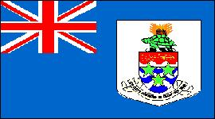

Islas Caimán
|  |
Información general
Nombre oficial: Islas Caimán
Área: 259 km2
División política:Territorio dependiente británico
Unidad monetaria: Dólar de Islas Caimán
Idiomas: Inglés (oficial)
Gentilicio: de Islas Caimán
Curiosidades
El territorio está constituido por tres islas: Gran Caimán, Pequeño Caimán y Caimán Brac.
Perfil
Ecónomico
Perfil Demográfico
Población: 36.273 hab.
Densidad de población: 138 hab/km²
Perfil Cultural
Religión:
- Protestantes: 88,0%
- No religiosos: 3,1%
- Católicos: 3,0%
- Judíos: 1,9%
- Otros: 3,0%
Sistema de Gobierno
Constitución vigente: 1972 (revisada en 1992)
Sistema ejecutivo: Gobernador (representante del Monarca británico, preside el Consejo Ejecutivo).
Sistema legislativo: Asamblea Legislativa (cuatro miembros oficiales y quince electos).
Sistema judicial: Corte Sumaria, Corte Suprema, Corte de Apelaciones, Consejo del Rey.
Aproximación histórica
Tres islas principales integran el territorio de las Islas Caimán: Gran Caimán, Pequeño Caimán y Caimán Brac. Las Islas Caimán están situadas al noroeste de Jamaica.
El relieve es en general bajo, sin corrientes de agua y algunas lagunas. El clima es tropical, moderado por los vientos alisios.
En 1670 las Caimán pasan a ser colonia británica y en 1832 se establece la primera asamblea de representantes. Hasta 1959 fueron administradas como dependencia de Jamaica.
En 1990 el Reino Unido extendió las aguas territoriales de las islas de 3 millas a 12 millas náuticas.
«-- ir al comienzo
«-- regresar